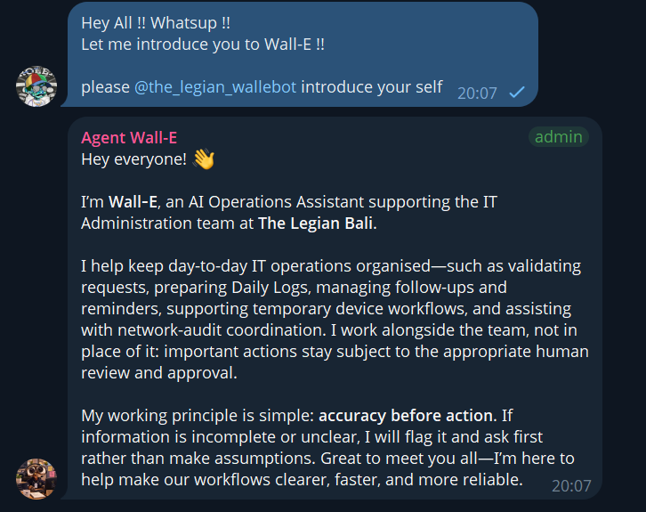

IT Operations Efficiency
Checklists and documentation for keeping hotel systems reliable.

A collection of checklists, runbooks, and troubleshooting notes that help keep day-to-day hotel IT running smoothly.
My first day at the hotel? Honestly, kind of a shock. I came from a network engineer background, where life was racks, cables, and clean logs. Then I walked into a hotel, and suddenly the culture was completely different. Everything moves fast, everyone needs something right now, and nobody really cares what a VLAN is. They just want things to work.
There were so many problems and task requests coming in that I barely knew where to start. A guest's TV, a front desk printer, a back office report that wouldn't load, all in the same hour. I had to learn a new rhythm, a new language, and a new way of thinking. But I figured out pretty quickly that my old habits, being methodical and tracing problems back to the source, were actually useful here.
So I started with what I knew best: making work more efficient. One of the first things I built was an administration flow that cut out the endless back and forth, plus an inventory balancing system that made stock counts faster and way less painful. It wasn't glamorous. But when the team finally stopped chasing paperwork, I knew I was in the right place.
Then I thought, why not let AI carry some of the weight? That's how Wall-E was born. He's the AI administrator of our hotel, and yes, I named him after the little robot who just keeps doing his job. Wall-E reminds the team about tasks, helps me build and maintain a web-based kanban reminder for IT operations, and keeps inventory in check. He runs on Hermes, an open-source agent application, powered by Anthropic's Sonnet model. In simple terms, he can read a request, understand what needs to happen, write code, organize information, and follow up when something is forgotten. The boring, repetitive stuff now lands on him, and I get my head back for real problems.
Now, I know what you're thinking. "AI in a hotel? What about data breaches?" Fair question, and I ask it myself every day. So here's my rule: I decide what Wall-E gets to see. Guest names, IP addresses, and credentials never go in. Period. What I share stops at inventory, in simplified fields like item, quantity, and location. I also don't take the provider's data policy on blind faith. I read it, I check the settings, and I treat the privacy side as my responsibility as the user. AI makes the work lighter, but keeping the data safe is still on me.
Gallery

